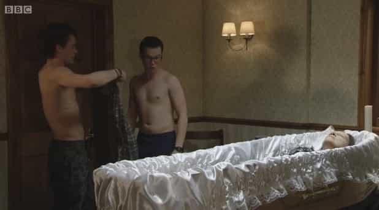
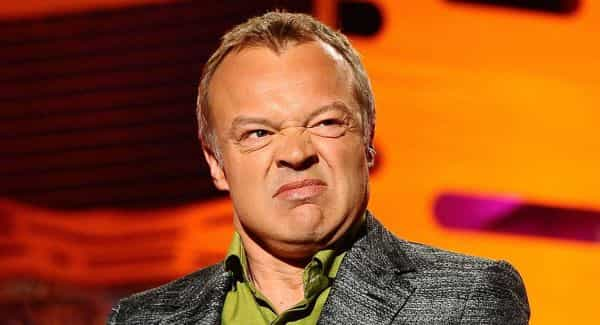

< < < Back
BBC’s Charter Comes Under Review, Shills Come Out Of The Woodwork To Defend It – Return Of Kings
David Cameron’s Conservatives are to undertake a fundamental “root and branch” review of the BBC. A consultation paper released last week will set out the issues to be addressed in negotiations over the state broadcaster’s future. The report will investigate whether people who don’t pay the £145.50 annual licence fee deserve to be thrown in prison.
It will also look at the BBC’s impartiality and question what real need there is to have a state broadcaster produce soaps like EastEnders and Strictly Come Dancing.
Degenerate entertainment, funded by the state.
The reaction of the Left has been melodramatic, the Guardian newspaper and various celebrities lining up to defend the corporation. Lord Patten, a former chairman of the the BBC trust, complained that Tory culture secretary John Whittingdale had assembled an advisory panel to “bury the BBC that we love.”
Has the time come to pare down the BBC, a parasitic behemoth rendered obsolete in the age of broadly available internet and deep skepticism of official information channels? Or are the nostalgics onto something in demanding that “Auntie” continue to be underwritten by the government?
The pigs come out in defence of the trough
The strongest plea in favour of the BBC has come from, unsurprisingly, the people who make a pretty packet out of its existence. In an open letter to David Cameron, dozens of “celebs” spoke against the Tories’ planned reforms. JK Rowling, Judi Dench, and Chris Evans were among them.
The grandiose, presumption on their behalf is that “a diminished BBC would simply mean a diminished Britain.” They gushed further, calling the BBC “a very precious organisation,” which is “overwhelmingly a creative force for good.”
The bureaucrats within the fortress walls piled in with even more pompous pronouncements: the Director General of the BBC, Lord Hall, gave a stern warning to the government to keep its mitts off, arguing that the Beeb must not be prevented from hiding “the next Strictly, the next Bake Off or the next Top Gear.”
Making no mention of the fact that the BBC is funded by way of a licence fee extracted from TV owners on pain of imprisonment, Lord Hall was clear on who would “lose” in the wake of any meddling with the corporate structure of the BBC:
…the people who will lose are not the commercial interests and people with particular vested interests – it’s the people who pay for us, the people who love us. The debate is too often in terms of this interest or that interest, not in terms of the people who are, in the end, our shareholders.
With breathtaking certainty, he declared the public to have “no appetite” for a smaller BBC, and said that the “great majority” of licence fee-payers are happy to pay the current licence fee.
A cheap stunt by an empty suit
Danny Cohen, an Oxford-educated liberal shoving PC opinions down your throat with money extracted from you on pain of imprisonment
The patent ridiculousness of a state-subsidised media elite sitting making spurious attempts to defend the long-standing sacred cow that is the BBC should surprise nobody. Neither should the revelation made by broadcasting veteran Michael Palin, that the gushing pro-BBC letter co-signed by numerous celebrities and presented as “independent,” was in fact a propaganda exercise organised by none other than Danny Cohen, its head of TV, who I have written about previously as being a key figure in the cultural Marxist claque militating for Jeremy Clarkson’s demise.
But then again, you mights say, nothing wrong with a bit of lobbying for a good cause. Once one considers that many of the signatories of the letter rely on Cohen for work, or are, like Rachel Weisz, personal friends, the entire exercise starts to look like the desperate machinations of the head rat on a quickly sinking ship.
Palin’s revelations were compounded when Sir David Attenborough, the UK’s top dog for nature programming, also said he was approached to sign what has now become known as the “luvvies letter.”
Tory MP Andrew Bridgend, who is leading a campaign to decriminalise non-payment of the licence fee, has called for Cohen to quit:
Unless he resigns I shall be writing to Jesse Norman, chairman of the Culture Media and Sport Committee, on Monday asking him to call Mr Cohen before the committee to answer questions about his role in the shabby affair and to find out why he pursued a course of action that is in breach of the BBC’s own lobbying guidelines.
Solipsism – the oxygen of Planet BBC
Graham Norton: an utterly talentless, disposable non-entity
The luvvies are showing no inclination whatsoever to simply roll over and die. Asked by the Daily Express whether the BBC Trust would investigate the letter, a Trust spokeswoman said: “The genesis of this letter is not a matter for the BBC Trust.” If the defiance is not enough, the Corporation is even scheming to put the country through a “deprivation test” by blacking out its services to licence payers.
The idea is to show them how much they would miss the BBC. Embittered old queen Graham Norton claimed he had pushed the “deprivation test” to Lord Hall. “Just put £24 into everyone’s bank account, and switch the BBC off for two months, and people would shit themselves,” he prophesied.
Commenters on the Guardian’s lunatic fringe gave a glimpse into left wing solipsism around favoured institutions: User “Ergolardgo” commented:
If the BBC shut down for even just a week, the political storm it would cause would break every bone in Cameron and Whittingdale’s bodies, and leave them defeated, eviscerated husks with no political future. The Conservative party have literally no idea what a stupidly dangerous game they are playing. Cameron, allowing this BBC war to become inflamed, is behaving like the spoilt child we all know he is, not a statesman who deserves any of our respect.
Who will put the bloated BBC out of its misery?
It is not apparently clear why political careers would necessarily end and common people would convulse in paroxysms of withdrawal at the turning off the BBC. At every level, be it television, radio or web, the BBC has stiff competition from the commercial sector, who are able to offer material of equivalent quality but without a licence fee.
Even the high-brow radio offering, BBC Radio 4, which provides a high quality medley of of documentaries, talk shows, and radio plays, has its competitors: The web-savvy can tune into NRP, or even Radio France Culture if they speak French (and most of the bourgeois middlebrows who listen to Radio 4 inevitably do).
The unfortunate reality is that the BBC is a healthy cash cow for a large population of liberal intellectuals who live as parasite off the credulity and inaction of the British populace. 81 senior BBC managers now earning more than the Prime Minister.
The number of television and radio presenters in the £250,000-£500,000 salary bracket rose from 25 to 34. This class of leeches sit in sumptuous comfort dreaming up new, innovative forms of political correctness, such as referring to Islamic State as “so-called Islamic State” in order not to offend Muslims.
The entire charade is sustained by the subcontracted thugs at Capita Plc, who the BBC, not wishing to sully its starched white collar, delegates the collection of the licence fee. The tools at their disposal include threatening letters and doorstep intimidation.
3,000 people a week are prosecuted for TV Licence evasion. 32 people were jailed in 2013 for not paying the fine, while 51 were jailed in 2012. For the pinstripe suits who set the BBC up to lecture us on the moral goodness of green taxes and endless foreign aid in spite of localised austerity, these people are just “bugsplat,” a statistical irrelevance to be hand-waved aside.
But if the BBC is so wonderfully good, and so loved by the nation, surely it would survive as a commercial concern? Time to cut the umbilical cord, and let the Danny Cohens, the Lord Halls, and the Graham Nortons, sink or swim.
Read Next: Gawker Melts Down After Attempting To Out Condé Nast CFO David Geithner


{kind=link}
{kind=link}
{kind=link}
{kind=link}
{kind=link}